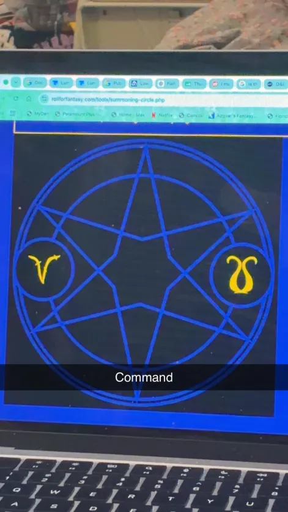

Command

You speak a one-word command to a creature you can see within range. The target must succeed on a Wisdom saving throw or follow the command on its next turn. The spell has no effect if the target is undead, if it doesn't understand your language, or if your command is directly harmful to it. Some typical commands and their effects follow. You might issue a command other than one described here. If you do so, the DM determines how the target behaves. If the target can't follow your command, the spell ends.
Jump

You leap high into the air, using a quick burst of energy. You can jump up to 20 feet horizontally and 10 feet vertically.
Mage Hand

A spectral hand hovers near you and can manipulate objects within 30 feet.
Comprehend Languages

You gain the ability to understand any spoken language you hear for the duration of the spell.